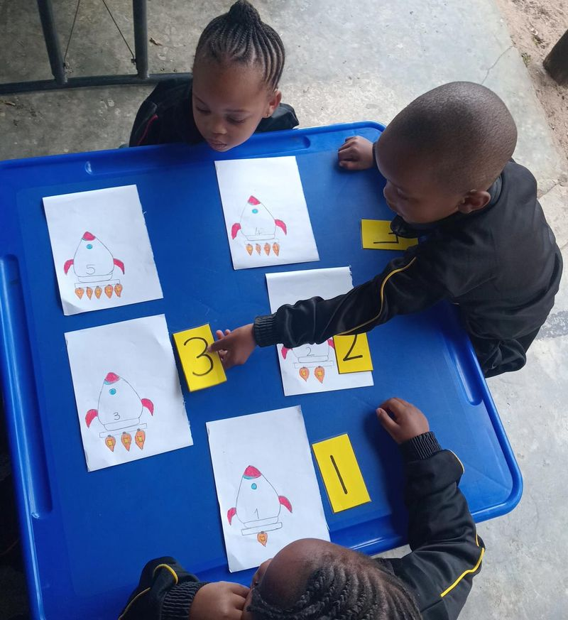
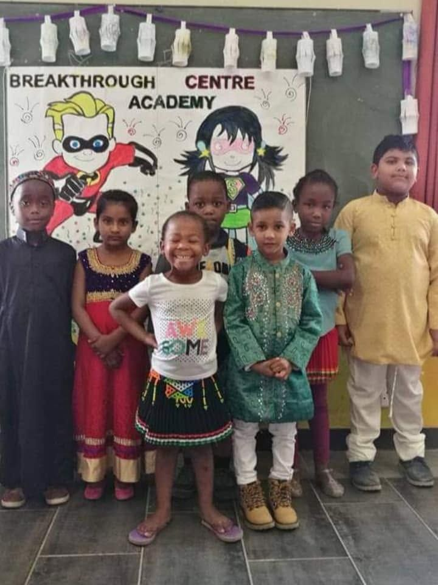
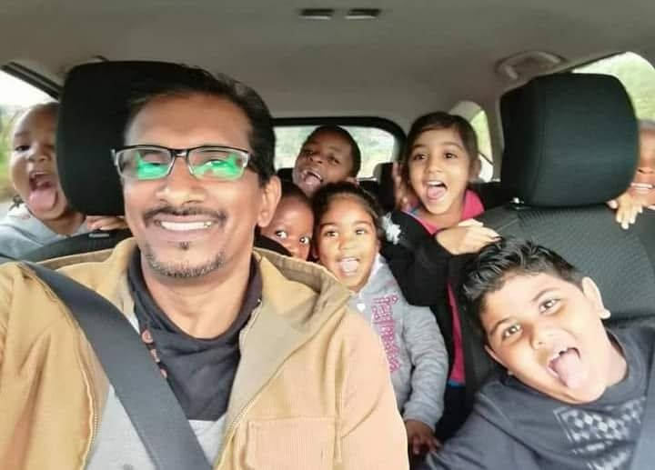
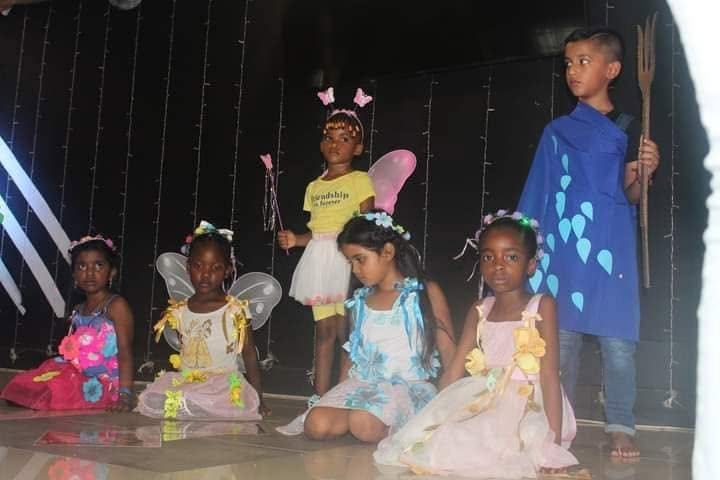
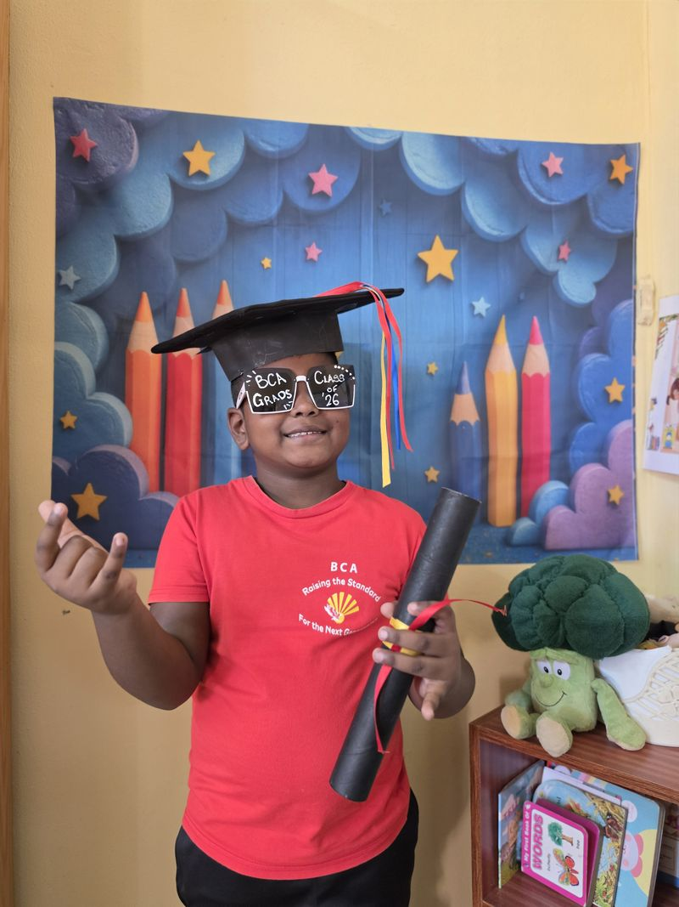

Breakthrough Centre Academy
Our preschool and early childhood development (ECD) centre in Etete, Groutville. Families from KwaDukuza, Shakaskraal and along the Dolphin Coast trust us with their little ones from the age of two.
We don't lower the bar
We opened in 2005 in a small house with four learners. We've grown quickly since then for one reason: we refuse to lower our standards. You can't lower the bar and expect excellent results, and the start a child gets here stays with them for life.
Every child follows a structured programme in Maths, Science, Languages and Life Skills. Even our two-year-olds are building their vocabulary and learning the first steps of reading and writing. Along the way we teach good manners, respect for others and healthy eating habits.
In 2021 we were also awarded the lease of a brand-new community-based crèche and pre-school in Shakaskraal.

"I can read"
Many children pass through life not having mastered the art of reading, and the consequences reach far beyond the classroom. I can read takes a practical, hands-on approach to teaching reading with the South African child in mind.
The manual forms part of the curriculum at Breakthrough Centre Academy, and learners as young as 3 have developed sound literacy foundations through this programme. Local schools and parents also attend our workshops on helping children apply foundational patterns in reading.
Reading, speaking and growing in confidence
Poor literacy is a national concern. Our Literacy and Language Development programme has become a model for strong results in foundational reading, mathematics and public speaking, and our learners leave with confidence and healthy self-esteem.
A week at the Academy
Cooking, shopping, coding, exploring, painting, planting and splashing in the water pool: this is what learning looks like for our little ones. The photos move on their own; tap one to see it bigger.
Dressed up for Valentine's Day 2026
Our learners love a reason to celebrate, from Heritage Day to the end-of-year function.

Proud of who we are
On Heritage Day our learners come to school in traditional dress, sing, dance and celebrate the cultures that make South Africa special. Learning to honour where we come from builds confidence and respect for others.

Parents as partners
You're part of the team. Every term we hold parent meetings where you can see your child's progress and get to know the teachers, plus free workshops on how to help your child do their best at home.
Time to shine
Every learner gets a turn on stage at our Annual Concert and Graduation: speaking, storytelling, dancing, acting and singing in front of a proud crowd.


Enrol your child
We'd love to welcome your family. WhatsApp 081 775 1488 to find out about places and registration.
Questions parents ask
What age can my child start?
We take children from the age of two.
What will my child learn?
A structured programme in Maths, Science, Languages and Life Skills, with our "I can read" programme building strong reading from the start. Every learner also takes part in our concert and graduation.
Where is the Academy?
At Breakthrough Centre, 170 Old Main Road, Etete, Groutville, Dolphin Coast, KwaZulu-Natal, near KwaDukuza (Stanger), Shakaskraal and Ballito. Since 2021 we also run a community-based creche and preschool in Shakaskraal.
How do I ask about a place?
WhatsApp 081 775 1488 and we'll let you know about places and registration.
Can parents be involved?
Yes. We hold parent meetings every term, and parents can attend free workshops on supporting their child's learning.